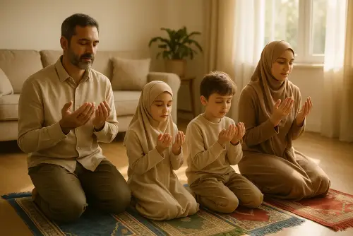
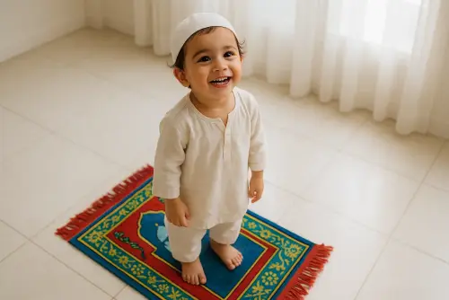

How to Teach Kids Salah: A Parent's Step-by-Step Guide
Teaching children to pray is one of the most beautiful gifts you can give them. Whether you're showing your child how to pray in Islam for the first time or building a consistent prayer habit, this guide will walk you through every step with practical, parent-tested tips.

I still remember the day my daughter, maybe six years old, pulled out her little prayer mat without being asked, stood next to me, and tried to follow along. She got most of the movements wrong. She whispered random Arabic words. It was absolutely beautiful.
That moment didn't happen because I'd lectured her about the importance of salah. It happened because she'd watched me pray hundreds of times and finally wanted to be part of it. And that's really the secret to teaching kids to pray: they learn by watching, by doing, by wanting to.
But I know it's not always that easy. Some days it's a battle. Some kids resist. Some go through phases. So here's a complete, age-by-age guide to teaching salah for kids that I hope takes some of the stress off your shoulders.
Why Salah Is Important in Islam
Before diving into the how, let's remember the why. Salah is the second pillar of Islam and the first thing we'll be asked about on the Day of Judgment. It's our direct connection to Allah — no intermediaries, no barriers, just you and your Creator.
For children, salah offers something even more immediate: it teaches discipline, mindfulness, gratitude, and belonging. When a child learns to pause five times a day to remember Allah, they're building an internal compass that will guide them through life's challenges.
The Prophet Muhammad (peace be upon him) said: "The prayer is the pillar of religion. Whoever establishes it has established the religion, and whoever abandons it has destroyed the religion." (Al-Bayhaqi) That's why teaching our children to pray isn't just a religious duty — it's one of the greatest gifts we can give them.
When kids understand that prayer is a conversation with Allah, not a chore, everything changes. Share this with them in age-appropriate ways throughout their journey.
Teaching Wudu for Kids: A Simple Guide
Before you can teach children salah, they need to learn wudu (ablution). Wudu is the purification ritual Muslims perform before prayer, and kids often find it easier to learn than the prayer itself because it's hands-on and involves water — which most children love!
Step-by-Step Wudu for Kids
- 1. Make the intention (niyyah) — Say "Bismillah" (In the name of Allah)
- 2. Wash your hands — Three times, up to the wrists
- 3. Rinse your mouth — Three times, swishing water around
- 4. Rinse your nose — Three times, sniffing water gently and blowing it out
- 5. Wash your face — Three times, from forehead to chin, ear to ear
- 6. Wash your arms — Right arm first, then left, up to the elbows, three times each
- 7. Wipe your head — Once, with wet hands from front to back
- 8. Wipe your ears — Inside with index fingers, outside with thumbs
- 9. Wash your feet — Right foot first, then left, up to the ankles, three times each
Tips for Teaching Wudu to Young Children:
- →Make it a race: "Let's see who can make wudu properly!" Kids love the challenge.
- →Practice during bath time to make it less formal and more fun.
- →Use a colorful wudu chart or poster in the bathroom as a visual reminder.
- →Explain that wudu makes us clean for meeting Allah in prayer — kids respond to this spiritual framing.
- →Don't worry about perfection at first. Celebrate when they remember the sequence!
Once wudu becomes second nature, moving to salah feels like a natural next step. The ritual of cleanliness before prayer helps children understand that salah is special and sacred.

How to Pray Salah Step by Step with Kids
Once your child knows wudu, you can introduce the prayer itself. This guide shows how to pray in Islam for beginners, simplified for children. We'll use the example of Fajr (2 rakahs), which is the shortest and easiest prayer to start with.
Salah Steps for Children (Simplified)
🤲 Step 1: Starting the Prayer (Takbir)
Stand facing the Qibla (direction of Mecca). Raise both hands to your ears and say "Allahu Akbar" (Allah is the Greatest). Then place your right hand over your left on your chest.
📖 Step 2: Reciting Al-Fatiha
Recite Surah Al-Fatiha quietly (or out loud if you're the imam). Then recite a short surah like Al-Ikhlas or Al-Falaq. For young kids, just Al-Fatiha is a great start.
🙇 Step 3: Bowing (Ruku)
Say "Allahu Akbar" and bow down, placing your hands on your knees. Keep your back straight. Say "Subhana Rabbiyal Adheem" (Glory to my Lord, the Most Great) three times.
🧍 Step 4: Standing Back Up
Stand up straight while saying "Sami Allahu liman hamidah" (Allah hears those who praise Him). Then say "Rabbana wa lakal hamd" (Our Lord, all praise is for You).
🕋 Step 5: Prostration (Sujood)
Say "Allahu Akbar" and go down into prostration. Your forehead, nose, both palms, both knees, and toes should touch the ground. Say "Subhana Rabbiyal A'la" (Glory to my Lord, the Most High) three times.
🪑 Step 6: Sitting Between Prostrations
Say "Allahu Akbar" and sit up on your knees. Pause for a moment, then say "Allahu Akbar" and go into prostration again, repeating the same words.
🔄 Step 7: Second Rakah
After the second prostration, stand up (saying "Allahu Akbar") and repeat steps 2-6 for the second unit of prayer.
🤲 Step 8: Tashahhud (Sitting for the Final Testimony)
After the second prostration of the second rakah, sit and recite the Tashahhud (the testimony of faith). For beginners, focus on getting comfortable with the posture first.
👋 Step 9: Ending the Prayer (Tasleem)
Turn your head to the right and say "Assalamu alaikum wa rahmatullah" (Peace and mercy of Allah be upon you). Then turn to the left and repeat. You've completed the prayer!
Parent Tips for Teaching Prayer Movements:
- →Pray side by side. Let your child follow your movements. This is how the Sahabah (companions) learned from the Prophet ﷺ.
- →Start with one rakah. Don't overwhelm them with the full prayer at first. Master one unit, then build up.
- →Use visual aids. Prayer books with illustrations or kid-friendly prayer apps can reinforce what they're learning.
- →Teach the Arabic gradually. Start with the actions, then add the words one phrase at a time.
- →Explain what the words mean. "Subhana Rabbiyal Adheem means 'Glory to my Lord, the Most Great.' We're praising Allah!" Kids love knowing the translation.
Remember: The goal isn't perfection. The goal is building familiarity and love. When prayer becomes something your child wants to do with you, you've won half the battle.
The 5 Daily Prayers in Islam — Explained for Kids
One of the first questions kids ask is: "Why do we pray five times?" Here's how to explain the five daily prayers in a way children can understand and remember.
🌅 Fajr — The Morning Prayer
When: Before sunrise, while it's still a bit dark
How many rakahs: 2 rakahs
Why it's special: Fajr is the first prayer of the day — it's like saying good morning to Allah before anything else. The angels come down during Fajr time, and praying it shows real dedication because it means waking up early! Tell kids: "When you pray Fajr, you're starting your day with Allah, asking Him to bless everything you do."
☀️ Dhuhr — The Midday Prayer
When: After the sun passes the highest point in the sky (around noon)
How many rakahs: 4 rakahs
Why it's special: Dhuhr is the prayer that reminds us to pause in the middle of our busy day. Even when we're playing or doing homework, we stop to thank Allah. It's like a reset button for the afternoon!
🌤️ Asr — The Afternoon Prayer
When: In the late afternoon, before the sun starts to set
How many rakahs: 4 rakahs
Why it's special: Asr is the prayer we do when the day is winding down. The Prophet ﷺ said angels watch over us during Asr, so it's an extra-important prayer to never miss. Explain: "It's like giving Allah a thank-you note before the day ends."
🌇 Maghrib — The Sunset Prayer
When: Right after the sun sets and the sky turns orange and pink
How many rakahs: 3 rakahs
Why it's special: Maghrib has the shortest prayer window — you have to pray it soon after sunset. It's the prayer that marks the end of the day. Many families love praying Maghrib together because everyone's usually home. Tell kids: "It's like telling Allah, 'Thank you for this whole day!'"
🌙 Isha — The Night Prayer
When: After twilight disappears and the sky is fully dark
How many rakahs: 4 rakahs
Why it's special: Isha is the last prayer of the day, prayed before bed. It's a peaceful way to end the day by asking Allah to protect us through the night. Some kids think of it as their "goodnight" to Allah. After Isha, many families also pray Witr, a special nighttime prayer.
For young children, start by praying one or two of these together — like Maghrib (because it's short and families are together) and Fajr on weekends. As they grow, they'll naturally add the others. The goal is to help them see the rhythm and beauty of praying throughout the day.
Teaching Salah to Kids Ages 5-7: Plant the Seeds 🌱
At this age, it's all about exposure and positive association. You're not trying to build a five-times-a-day habit yet. You're planting seeds for a lifelong love of prayer.
- →Let them imitate you. When you pray, invite them to stand next to you. Give them their own little prayer mat (kids love having their own). Don't correct every movement. Just let them be part of it.
- →Make wudu together. Turn it into a little ritual. "Let's race to make wudu!" The splashing, the sequence, kids find it fun when you make it playful.
- →Teach one surah at a time. Start with Al-Fatiha. Then Al-Ikhlas. Make it a game. Recite together in the car, before bed, during walks. When they memorize one, celebrate like they just scored a goal.
- →Tell stories about prayer. Share Islamic stories of the prophets who prayed: how Ibrahim prayed for his family, how Maryam was devoted to worship. Stories stick better than rules. Our Quran Stories ebook has beautifully illustrated versions that kids genuinely ask to read again.
- →Never punish for missing prayer. At this age, prayer isn't obligatory. If you turn it into a punishment, you're creating a negative association that can last years.
Teaching Salah to Kids Ages 8-10: Build the Routine 🧱
Now you can start being more intentional. The Prophet (peace be upon him) told us to teach our children prayer at seven and encourage them at ten. This is the building phase.
- →Pray together consistently. This is the single most powerful thing you can do. If your child sees that prayer is non-negotiable for you, it becomes normal for them. Family prayer time, even if it's just one or two salawat together, is gold.
- →Teach the proper movements and words. Gently now. "Do you know what we say in ruku?" Walk them through it without making it feel like school. Some families use visual prayer guides or posters in the room.
- →Create a prayer tracker. A simple chart on the fridge where they put a sticker after each prayer. Kids love visual progress. Some families do a weekly "prayer goal" with a small reward.
- →Take them to the mosque. There's something about praying in congregation: the rows, the unity, the adhan echoing. That leaves a deep impression on children. Even once a week makes a difference. (During Ramadan, Taraweeh nights are especially powerful — see our Ramadan activities guide for more ideas.)
- →Talk about why we pray. Not in a lecture-y way. More like: "You know what I love about salah? It's like a reset button. When I'm stressed or overwhelmed, I make wudu and pray, and I feel so much lighter." Share your real experience.
Making Salah Fun for Kids 🎉
Let's be real: kids aren't naturally drawn to routine and discipline. But when you make prayer engaging and rewarding, it stops feeling like a chore and starts feeling like something they want to do.
🎨 Give Them Their Own Special Prayer Gear
Let your child pick out their own prayer mat — maybe one with their favorite color or a design they love. Some kids get excited about a special prayer outfit or a kufi/hijab just for salah. When it feels like "theirs," they're more invested.
⭐ Create a Prayer Sticker Chart
Visual progress is incredibly motivating for kids. Make a simple chart where they add a sticker for each prayer. At the end of the week, celebrate their consistency with small rewards: extra playtime, choosing dinner, a special treat, or a bedtime story from the Quran.
📱 Use Kid-Friendly Prayer Apps
There are wonderful apps designed specifically to teach kids how to pray. They have gentle adhan sounds, colorful animations showing wudu and salah steps, and reminders that aren't annoying. Let your child set their own prayer alarms so they feel responsible.
👨👩👧👦 Make It a Family Event
Nothing beats the experience of praying together as a family. When everyone drops what they're doing to pray Maghrib together, kids see that salah is a priority. The bonding, the sense of unity — it makes prayer feel warm and communal instead of isolating.
🏆 Celebrate Milestones
First time praying alone? Huge celebration. Prayed all five prayers for a whole week? Special recognition. Memorized a new surah to recite in prayer? Time for a family ice cream outing. Positive reinforcement creates positive associations.
📚 Use Books and Videos
Islamic children's books with colorful illustrations showing how to pray can reinforce what you're teaching. Short animated videos (age-appropriate and Islamic) showing kids performing wudu and salah also help. Visual learning sticks.
🎯 Set Small, Achievable Goals
Don't expect five prayers a day right away. Start with one — maybe Maghrib because the family is together. Once that becomes natural, add Fajr on weekends. Then Isha. Gradual progress prevents overwhelm and builds real habits.
The secret is this: when salah is connected to warmth, family, praise, and positive experiences, kids develop an intrinsic love for it. And that love is what sustains them when they're older and you're no longer there to remind them.
Teaching Salah to Kids Ages 11+: Strengthen the Habit 💪
This is when things get real. Puberty is approaching (or has arrived), and prayer becomes obligatory. Your child needs internal motivation now, not just "because Mom said so."
- →Give them ownership. Let them set their own prayer alarms. Let them choose their prayer spot. Autonomy builds responsibility. When they feel like it's their practice, not something imposed on them, everything shifts.
- →Address the phone problem honestly. We all know it. The biggest obstacle to prayer for tweens and teens is the phone. They're in the middle of a game, a chat, a video, and the adhan goes off. Tools like Prayer Lock can genuinely help here. It blocks distracting apps until prayer time, turning the phone from an obstacle into a reminder. No nagging from you needed.
- →Have real conversations about salah. "Do you ever feel like you're just going through the motions?" Ask them. Listen. Share your own struggles. Preteens and teens respond to authenticity, not perfection.
- →Connect them to a community. Youth halaqas, Islamic camps, even an online community of Muslim kids their age. When their peers pray, it normalizes it in a way parents alone can't.
- →Celebrate consistency, not perfection. "I noticed you've been praying Fajr all week. That's amazing." Positive reinforcement at this age goes a long way. Don't focus on what they're missing; highlight what they're doing right.
The Part Nobody Talks About
Sometimes your child will go through a phase where they resist prayer. Maybe it's at 9, maybe at 14. It's scary and heartbreaking and normal. Almost every Muslim parent I know has been through it.
Here's what I've heard from parents on the other side: don't panic. Keep praying yourself. Keep the door open. Keep the conversations gentle. A child who grew up watching their parents pray with love, who has warm memories of standing next to you on the prayer mat, will come back. They almost always come back.
Your job isn't to force faith into their hearts. That's Allah's domain. Your job is to create the environment where faith can grow. And you're already doing that by caring enough to read this.
Quick Summary: The Key Principles
- ✅ Start with imitation, not instruction
- ✅ Teach wudu first — it's hands-on and fun
- ✅ Pray together. It's the most powerful teaching tool
- ✅ Break down salah step by step, one movement at a time
- ✅ Explain the 5 daily prayers in kid-friendly language
- ✅ Make it warm, not stressful
- ✅ Use age-appropriate tools, trackers, and rewards
- ✅ Celebrate effort, not perfection
- ✅ Share your own relationship with salah honestly
- ✅ Be patient during the resistant phases
Frequently Asked Questions About Teaching Kids Salah
At what age should kids start praying salah?
The Prophet Muhammad (peace be upon him) recommended teaching children prayer at age 7 and encouraging consistency by age 10. However, many families introduce prayer playfully as early as age 3-4 by letting toddlers imitate the movements alongside parents. This early exposure helps children develop a natural comfort with salah before it becomes obligatory.
How do I teach my child to pray salah step by step?
Start by teaching wudu (ablution) first, as it's a prerequisite for prayer. Then break down salah into simple steps: 1) Standing with hands raised saying Allahu Akbar, 2) Reciting Al-Fatiha, 3) Bowing in ruku, 4) Standing back up, 5) Going into sujood (prostration), 6) Sitting between prostrations, 7) Second prostration, 8) Repeating for the second rakah, and 9) Ending with tashahhud and tasleem. Practice one step at a time and let them pray alongside you regularly.
How do I make salah fun for kids?
Make prayer engaging by giving kids their own special prayer mat and letting them choose the color or design. Create a prayer sticker chart to track their progress with small rewards. Pray together as a family to make it a bonding experience. Use prayer apps designed for children with gentle reminders and Islamic animations. Celebrate their efforts with praise rather than focusing on perfection. Some families also use Islamic prayer books with colorful illustrations or watch kid-friendly videos showing how to pray.
What is wudu and how do I teach it to kids?
Wudu is the ritual washing Muslims perform before prayer to achieve physical and spiritual cleanliness. To teach wudu to kids, demonstrate each step clearly: 1) Say Bismillah, 2) Wash hands three times, 3) Rinse mouth three times, 4) Rinse nose three times, 5) Wash face three times, 6) Wash arms to elbows (right then left), 7) Wipe the head once, 8) Wipe the ears, and 9) Wash feet to ankles. Make it playful by doing it together and turning it into a fun routine. Kids often enjoy the water aspect and the clear sequence of steps.
What are the 5 daily prayers in Islam?
The five daily prayers in Islam are: 1) Fajr - the pre-dawn prayer performed before sunrise, 2) Dhuhr - the midday prayer after the sun passes its zenith, 3) Asr - the afternoon prayer, 4) Maghrib - the sunset prayer performed just after the sun sets, and 5) Isha - the night prayer performed after twilight disappears. Each prayer has a specific time window and number of units (rakahs). For kids, start by practicing one or two prayers together as a family before gradually building up to all five.
May Allah make salah the coolness of our children's eyes, the way it's meant to be the coolness of ours. And may He make this journey easy for every parent reading this. 💚